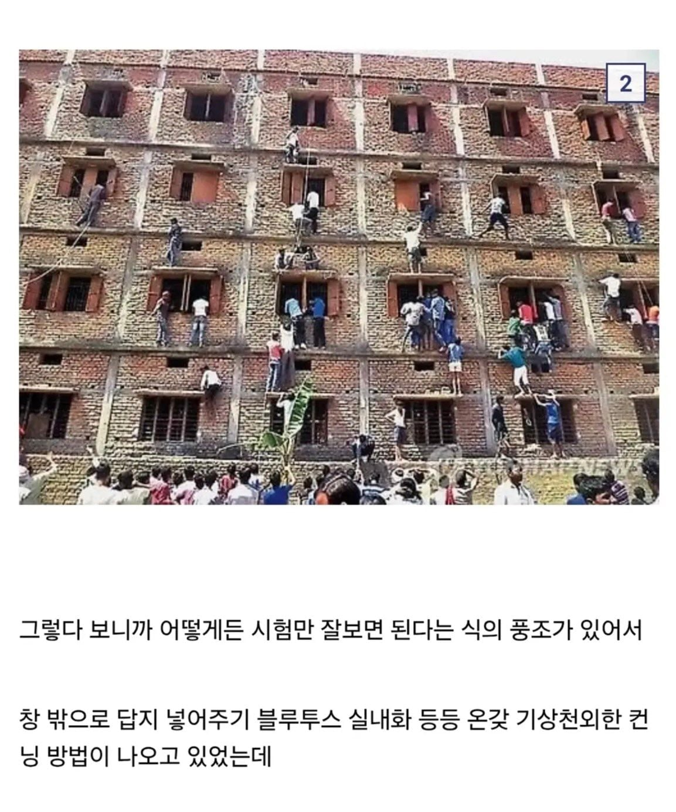
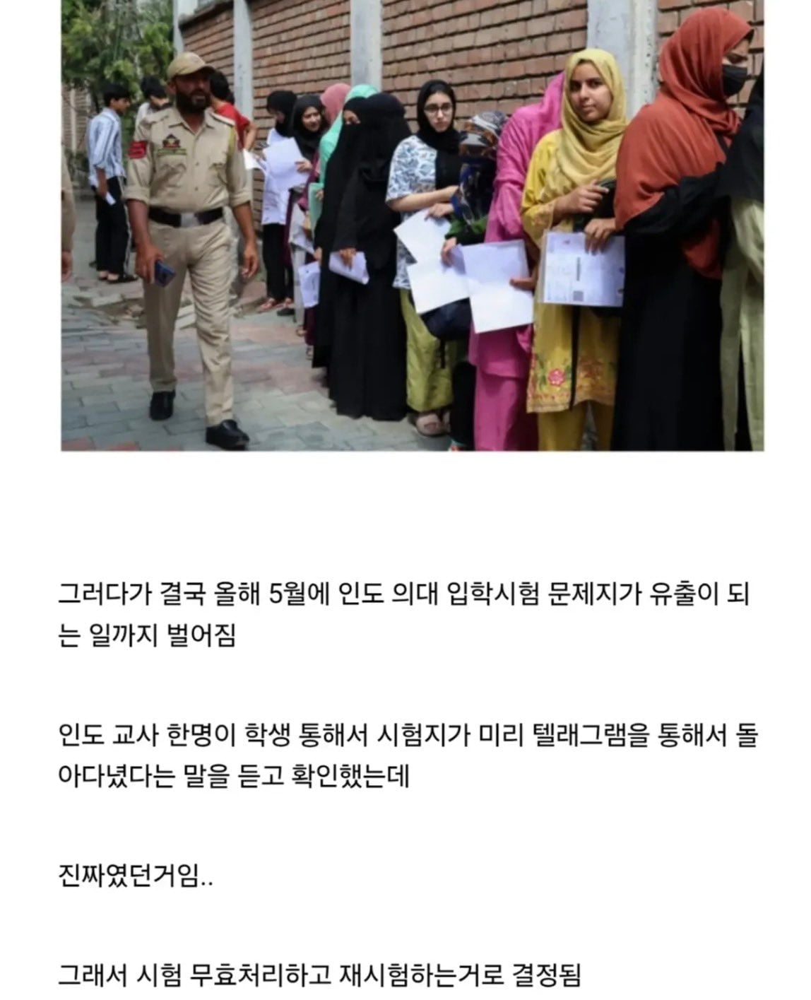
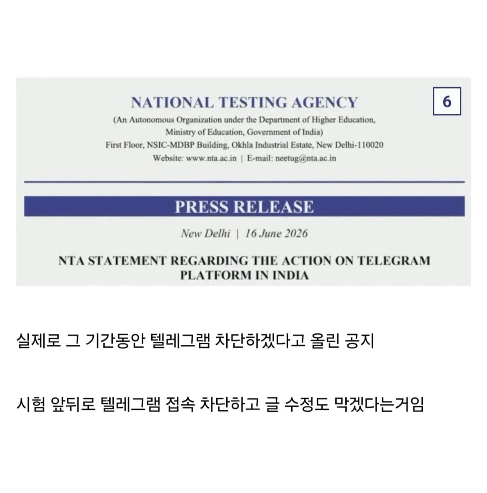
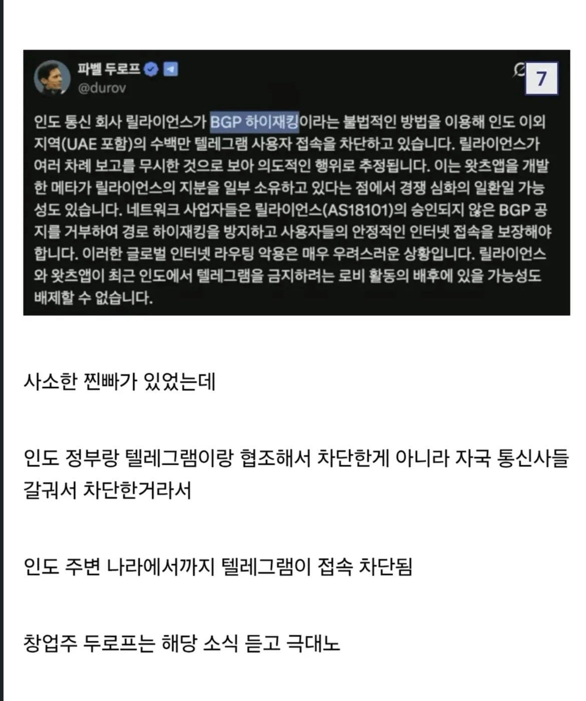

알 이즈 웰
텔레보다 보안 더 좋다는 메신저있다던데 그건 안막힐듯
그게 뭔데
개드립
탈중앙화, 보안, 메신저 키워드로 알려달라고 하면 좀 나오긴 해
ISP들이 막아버리는데 어떻게..?
근데 텔레그램이든 뭐든 vpn 쓰면 되는거 아니야..?
국가에서 막아버리면 vpn도 소용없지
국가에서 막아서 vpn 으로 하는 경우가 너무 많은데..?
차단(물리)
인도는 항의해봐야 소용 없음 ㅋㅋㅋㅋㅋㅋ
인도 통신사 차단이 진짜 좆같더라
강남에거 공인 영어 시험보는데 방글라데시 유학생 애새끼들 대놓고 컨닝질 하더라 인도랑 비슷한듯
저렇게 답지 넣어줘도 0점처리 안됨?
초시때 잘친 수험생들이 재시험 압박감에 살자도 많이함..